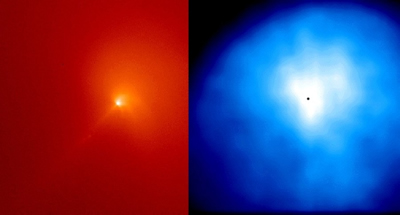

The first sign of activity in a comet approaching the Sun is the appearance of the cometary coma surrounding the nucleus. Although occasionally visible at much larger distances due to the sublimation of the more volatile carbon monoxide, this envelope of gas and dust usually begins to form when the comet reaches about 2 – 3 astronomical units (AUs), close enough for the Sun to heat the surface of the nucleus sufficiently to sublimate water. Because the nucleus of the comet is so small, the gas and dust released easily escapes its gravitational pull to temporarily form the coma. This is a dynamic place, as material is quickly lost (on the order of a day) to the cometary tails or due to dissociation, and is constantly replaced through further sublimation from the nucleus.

Credit: NASA/GSFC
Each comet actually has two comas:
- The gas coma consists of molecules liberated from the nucleus by solar heating. The majority of these molecules will either be broken apart (dissociated) releasing neutral hydrogen into the cometary hydrogen cloud, or ionised and dragged out into the gas tail by the solar wind.
- The dust coma consists of dust grains dragged from the nucleus along with the sublimating gas. These can then be pushed out to form the dust tail by radiation pressure.
At perihelion, the coma is typically about 100,000 km across and shaped like a teardrop by the solar wind. The inner coma shows a wide range and number of features such as jets and fans, which are most likely related to active regions on the comet nucleus. At one point in its spectacular trip through the inner Solar system, the extremely active comet Hale-Bopp displayed 7 jets.